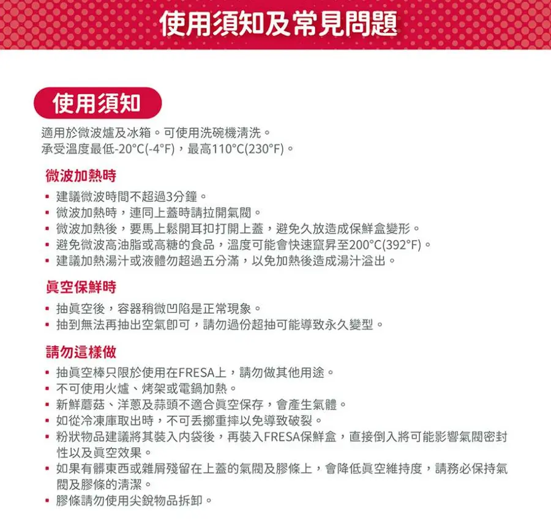
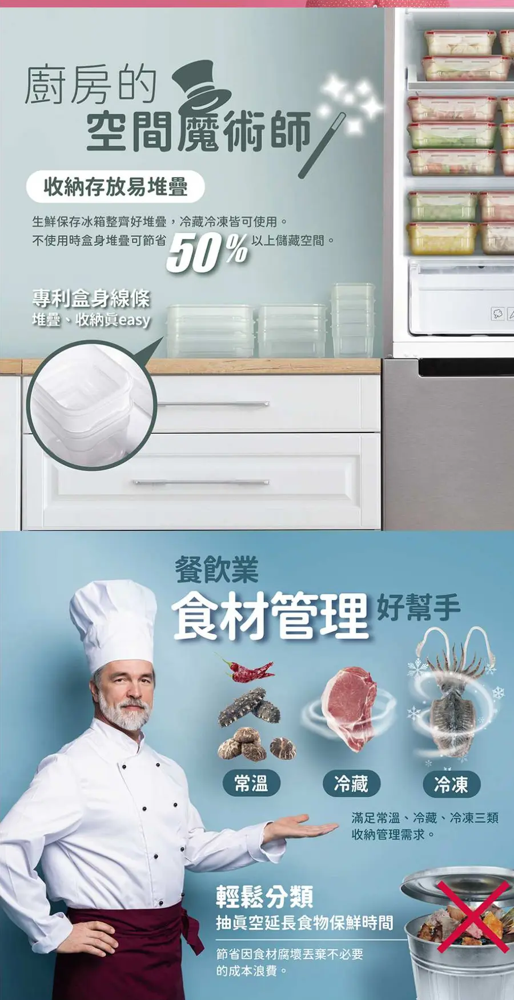

📌 太太條件：可微波＋可冷凍＋可冷藏
判定規則：三項都要在來源頁有原文寫明才算「符合」；任一項頁面沒寫算「未確認」；頁面或主人說明寫明做不到算「不符合」。推薦只從「符合」挑。
- 符合 只有 FRESA 8件組（momo，NT$1,962，7 盒）。規格表「微波」「上蓋可微波」「冷凍冷藏」每個尺寸都打勾，使用須知寫
適用於微波爐及冰箱
、承受溫度最低-20℃
。注意冷凍冷藏是合併一欄。PP 塑膠、手動真空棒、不能進烤箱或電鍋，3 年保固，11/02 前到貨。 已確認 總容量 7,050ml 與每 ml 0.28（計算：1962/7050）為計算值。 推測 - 未確認 嘖嘖 Vacu（缺冷藏原文）、前代極鮮封Z（冷凍只有通用注意事項、冷藏無字）、樂扣台灣含泵組（沒找到）、Coupang Fresh Maestro、Glasslock、LAICA、淘寶乐扣乐扣（主人截圖組）、淘寶双立人、淘寶 Glasslock。
- 不符合 原組2 淘寶 304 不鏽鋼款（主人說不可微波，1688 疑似同款寫不可用）、amuok（頁面寫蓋子不可微波）。
- Costco 台灣沒有真空保鮮盒組（只有一般保鮮盒、真空袋與封口機）。 已確認 來源：Costco 搜尋頁（真空保鮮盒）
匯率：人民幣 4.914（臺灣銀行牌告 人民幣即期賣出；牌告時間 2026/10/31 09:25；2026/10/31 15:04 台北時間取得） 已確認 來源：臺灣銀行牌告、臺銀當日 CSV。每 ml 與台幣換算價都是計算值，標 推測。價格均為 2026/10/31 頁面顯示價，可能變動。
🧾 三類分表（點一列展開）
每列：總價、盒數、總容量、每 ml（附公式）、微波／冷凍／冷藏各自原文或「頁面未寫」、來源網址、標籤。
符合 1 組｜三項都有原文
符合 FRESA 免開蓋微波真空保鮮盒8件組（手動真空棒＋PP 盒 7）momo
- 總價
- NT$1,962（市售價 2,890） 已確認
- 盒數
- 7 盒 已確認
- 總容量
- 7,050ml計算：500＋750＋1000×2＋1200×2＋1400；各盒容量取自 momo 品名，總容量頁面未逐字寫 推測
- 每 ml
- 0.28計算：1962/7050＝0.2783 推測
- 微波
- 規格表「微波」「上蓋可微波」兩列，0.5L、0.75L、1L、1.2L、1.4L 全打勾；詳情圖
上蓋、下盒、蒸盤 皆可微波
；使用須知適用於微波爐及冰箱
。 已確認 - 冷凍
- 規格表「冷凍冷藏」一列全打勾；詳情圖
冷藏冷凍皆可使用
；使用須知承受溫度最低-20℃(-4℉)，最高110℃(230℉)
。 已確認注意：冷凍與冷藏在規格表是合併一欄，沒有分開寫，也沒有分盒身與上蓋各寫。 - 冷藏
- 同上「冷凍冷藏」打勾；詳情圖
眞空保鮮 可冷藏保存
滿足常溫、冷藏、冷凍三類收納管理需求
。 已確認同樣是與冷凍合併一欄。
材質 PP、Silicone；手動真空棒（非電動）；3年保固期
；頁面寫預計 11/02 前到貨（2026/10/31 查詢）；不可使用火爐、烤架或電鍋加熱
建議加熱時間不超過3分鐘
，微波連蓋時要拉開氣閥。規格表標題為「FRESA Sano 系列商品」，是系列共用表，容量列與本組盒型一致。 已確認
來源：momo FRESA
未確認 9 組｜至少一項頁面沒寫，不能推薦
未確認 NEOFLAM 極鮮封Vacu ✦C 真空超值8件組（電動真空機＋玻璃盒 7）嘖嘖（募資預購，非現貨）
- 總價
- NT$2,490 已確認
- 盒數
- 7 盒 已確認
- 總容量
- 8,340ml計算：570×2＋950×2＋1500×2＋2300；總容量頁面未逐字寫 推測
- 每 ml
- 0.30計算：2490/8340＝0.2986 推測
- 微波
- 規格圖
適用｜洗碗機、烤箱、微波爐、電鍋、氣炸鍋、冷凍、熱水消毒
（整體一列）；FAQ「上蓋可以微波嗎？」答可以，微波時蒸氣會自真空閥門自動散出，微波前須保持真空閥門暢通、無異物。微波時間建議一次不超過3分鐘。
已確認 - 冷凍
- 同規格圖「適用」列有「冷凍」；icon 圖
-20℃～400℃ 耐溫
；提案人留言上蓋耐熱溫度為-20℃ ~ 100℃
。冷凍 已確認；上蓋單獨可冷凍：頁面未寫 未確認 - 冷藏
- 頁面未寫：專案頁文字、FAQ、留言、規格圖都沒有「冷藏」二字（只有矽膠蒸盤留言寫可冷藏，那是蒸盤不是盒）。 未確認推測：已有冷凍與 -20℃ 標示，冷藏應無問題，但這是推測，不能算符合。
缺冷藏原文。材質：盒身硼矽耐熱玻璃，上蓋矽膠＋強化玻璃＋PP；產地中國；保固 FAQ本品自購買日起提供一年保固。
（真空機）；募資至 2026/11/12 23:59。
未確認 NEOFLAM 前代極鮮封Z 必備5件組（長S＋長M＋長L＋長XL＋電動真空機）momo、PChome、NEOFLAM 官網
- 總價
- NT$2,190（momo、PChome） 已確認
- 盒數
- 4 盒 已確認
- 總容量
- 4,360ml計算：460＋800＋1200＋1900（PChome 品項） 推測
- 每 ml
- 0.50計算：2190/4360＝0.502 推測
- 微波
● 盒身適用於烤箱、微波爐、電鍋(需加蒸架)、氣炸鍋、烘碗機及洗碗機上層
● 上蓋適用於微波爐與洗碗機
（盒身與上蓋分別寫） 已確認- 冷凍
- 只有通用注意事項
● 使用於冷凍時，含豐富水份之食品，建議盛裝2/3之容量
；耐溫玻璃本體：-20℃~400℃
上蓋：-20℃~100℃
。沒有「盒身可冷凍」「上蓋可冷凍」明文。 未確認（部分確認） - 冷藏
- 頁面未寫：momo 與 PChome 詳情圖、文字都沒有「冷藏」二字；只有「冰箱」icon 與比較表
適用料理方式：微波爐、烤箱、氣炸鍋、電鍋、冰箱、洗碗機
。 未確認
冷凍只有通用注意事項、冷藏無字。momo預計2026/11/02出貨
；真空機一年保固，盒身保固頁面未寫。
未確認 樂扣樂扣台灣版 含電動泵的組蝦皮商城、momo、PChome
- 總價
- 未確認 未確認
- 盒數
- 未確認 未確認
- 總容量
- 未確認 未確認
- 每 ml
- 無法計算 未確認
- 微波
- 組頁未讀 未確認
- 冷凍
- 組頁未讀 未確認
- 冷藏
- 組頁未讀 未確認
沒找到可讀的組頁：蝦皮「頂級透明玻璃抽真空保鮮盒/袋多入組」飛比列表價 $999，點入被驗證頁擋，依規定停止。單盒參考（不是組、不含泵，不列入比較）：PChome 1.02L $549，頁面寫(不含真空抽氣棒)
，連同上蓋微波時請勿密封
冷凍保管時，含豐富水份之固體食物或液體請勿裝滿容器
，冷藏頁面未寫。
未確認 樂扣樂扣 Fresh Maestro 含幫浦組（Coupang 酷澎）Coupang（賣場未讀，以下為飛比列表標題）
- 總價
- a）入門4件組＋幫浦組 $2,445；b）6件＋幫浦套組 $3,927 未確認
- 盒數
- a）4 盒；b）6 盒 未確認
- 總容量
- a）3,900ml（計算：550＋900＋950＋1500）；b）9,850ml（計算：900×2＋1100＋1950＋2400＋2600） 推測
- 每 ml
- a）0.63（計算：2445/3900＝0.627）；b）0.40（計算：3927/9850＝0.399） 推測
- 微波
- 飛比單品摘要
可直接放入微波爐或烤箱加熱
（3.6L 單品，不是組頁） 未確認 - 冷凍
- 頁面未寫（未開賣場） 未確認
- 冷藏
- 頁面未寫（未開賣場） 未確認
價格與容量也只來自飛比列表，未確認。
來源：飛比搜尋（樂扣樂扣真空）
未確認 Glasslock 真空保鮮盒4件組（iOPEN Mall 個人賣家）iOPEN Mall
- 總價
- $660（飛比列表） 未確認
- 盒數
- 4 件 未確認
- 總容量
- 各盒容量不完整，無法計算 未確認
- 每 ml
- 無法計算 未確認
- 微波
- 頁面未寫 未確認
- 冷凍
- 頁面未寫 未確認
- 冷藏
- 頁面未寫 未確認
頁面只寫「韓國製」。Costco、PChome 沒有 Glasslock 真空組。
來源：飛比搜尋（樂扣樂扣真空）
未確認 LAICA 萊卡 真空保鮮盒2入附手抽幫浦 VT33030PChome
- 總價
- $1,280 已確認
- 盒數
- 2 盒 已確認
- 總容量
- 2,500ml計算：0.5L＋2L 推測
- 每 ml
- 0.51計算：1280/2500 推測
- 微波
- 頁面未寫 未確認
- 冷凍
- 頁面未寫 未確認
- 冷藏
- 頁面未寫 未確認
PChome 頁只寫材質：蓋子-ABS+矽膠 盒子-Tritan
，三項都沒寫。
來源：PChome LAICA
未確認 淘寶 乐扣乐扣 500ml＋740ml＋1130ml 四件組（含藍色真空泵）淘寶（主人截圖，未附網址）
- 總價
- ¥190（優惠前 ¥265）約 NT$934計算：190×4.914＝933.66；主人說明不另加運費價格 未確認（主人截圖，未附網址）；換算 推測
- 盒數
- 3 盒＋泵 未確認
- 總容量
- 2,370ml計算：500＋740＋1130 推測
- 每 ml
- 0.39計算：934/2370＝0.394 推測
- 微波
- 商品說明頁未讀到（淘寶內頁需登入）。公開賣家標題多寫玻璃、可微波，例如
乐扣乐扣保鲜盒电动真空玻璃饭盒可微波抽气密封冰箱收纳储存餐盒
，但不確定是不是同一款。 推測 - 冷凍
- 頁面未寫 未確認
- 冷藏
- 頁面未寫 未確認
其他主人截圖價：泵單買 ¥61.1；單品 500ml ¥35.2、740ml ¥38.6、1130ml ¥57.7、1020ml 分隔盒 ¥66.2；三件組 500＋740 ¥153、500＋1130 ¥178、740＋1130 ¥178；四件 500＋500＋740 ¥187。
來源：主人截圖（未附網址）（參考：淘寶公開列表（乐扣乐扣））
未確認 淘寶 双立人 真空保鮮盒套裝淘寶 双立人餐饮具旗舰店、飞鱼秀旗舰店
- 總價
- 旗艦店列表價 ¥218 約 NT$1,071（計算：218×4.914）；飞鱼秀 ¥199 約 NT$978（計算：199×4.914）價格 未確認；換算 推測
- 盒數
- 頁面未寫 未確認
- 總容量
- 頁面未寫 未確認
- 每 ml
- 無法計算 未確認
- 微波
- 商品說明頁面未寫（飞鱼秀標題有「可微波炉」，標題不是商品說明） 未確認
- 冷凍
- 頁面未寫 未確認
- 冷藏
- 頁面未寫 未確認
內頁需登入。原組4 另有含集運估算 NT$1,224 至 1,322（見下方原組4），算法與組2 不同。
未確認 淘寶 Glasslock 盖朗 電動抽真空耐熱鋼化玻璃保鮮盒淘寶
- 總價
- 列表價 ¥129 約 NT$634（計算：129×4.914）價格 未確認；換算 推測
- 盒數
- 未確認 未確認
- 總容量
- 未確認 未確認
- 每 ml
- 無法計算 未確認
- 微波
- 頁面未寫 未確認
- 冷凍
- 頁面未寫 未確認
- 冷藏
- 只有公開列表標題
…密封冰箱冷藏收纳盒
，標題不是商品說明 未確認
內頁需登入。
不符合 2 組｜頁面或主人說明寫明做不到
不符合 原組2 淘寶 304 不鏽鋼抽真空保鮮盒（2800ml×3＋電動泵）淘寶（主人提供價格）
- 總價
- ¥118.9 約 NT$584計算：118.9×4.914＝584.27；主人說明已含運，不另加運費價格 未確認（主人提供）；換算 推測
- 盒數
- 3 盒 未確認
- 總容量
- 8,400ml計算：2800×3 推測
- 每 ml
- 0.070計算：584/8400 推測
- 微波
- 主人說明不可微波；1688 疑似同款頁屬性
Material 304 stainless steel
Microwave oven Not available
（同店同型號未證實）。但淘寶公開頁標題寫…收纳可微波便当盒
（商品說明需登入），兩者矛盾。 - 冷凍
- 頁面未寫（1688 只有「Low temperature resistance」） 未確認
- 冷藏
- 頁面未寫 未確認
不符合原因：主人說明不可微波，且 1688 疑似同款寫不可用微波爐；保守列不符合，待主人開淘寶原頁確認。
來源：主人截圖（未附網址）（參考：1688 疑似同款頁、淘寶公開頁（304 款））
不符合 amuok Keep Fresh 真空玻璃保鮮盒PChome
- 總價
- 單盒 1040ml $279＋電動泵另購 $472，約 $751計算：279＋472 推測
- 盒數
- 1 盒（單賣） 已確認
- 總容量
- 1,040ml 已確認
- 每 ml
- 0.72計算：751/1040，僅供參考 推測
- 微波
蓋子不可微波
已確認- 冷凍
- 頁面未寫 未確認
- 冷藏
- 頁面未寫 未確認
不符合原因：上蓋明寫不可微波；頁面另寫電動真空抽氣機需另外購買
。
🥇 推薦順序（只從「符合」挑）
第 1（唯一） FRESA 免開蓋微波真空保鮮盒8件組 NT$1,962
理由
- 三項都有原文：規格表「微波」「上蓋可微波」「冷凍冷藏」每個尺寸都打勾，使用須知
適用於微波爐及冰箱
，耐溫最低 -20℃。 已確認 - 上蓋可微波，免開蓋加熱。 已確認
- 每 ml 0.28（計算：1962/7050），是所有有價格的台灣組裡最低。 推測
- 3 年保固、11/02 前到貨。 已確認
限制：PP 塑膠盒，不能進烤箱或電鍋；手動真空棒，不是電動；冷凍與冷藏是合併一欄，沒分開寫。 已確認 來源：momo FRESA
若堅持玻璃：目前沒有三項都有原文的玻璃款。Vacu 與前代Z 只差「冷藏」原文，補到後才能列入（見下方「還要補什麼」第 1、2 項）。 推測
📏 與 8,340ml 目標對照
- 推測 符合 FRESA 1 組：7 盒 NT$1,962 已確認；總容量 7,050ml，比目標少 1,290ml（計算：8340－7050），兩者為計算值。 來源：momo FRESA
- 推測 符合 FRESA 2 組：14 盒 14,100ml NT$3,924（計算：1962×2）。 來源：momo FRESA
- 推測 符合 FRESA 1 組＋PChome FRESA 單盒 1.4L $348：合計 8,450ml NT$2,310（計算：7050＋1400；1962＋348）。單盒與真空棒相容性頁面未寫（推測）。 來源：單盒價取自採購監看專員 v4 研究稿，未附網址（momo FRESA）
- 推測 未確認 Vacu：1 組 7 盒 8,340ml NT$2,490，剛好等於目標。 來源：嘖嘖專案頁
- 推測 未確認 前代Z：1 組 4 盒 4,360ml NT$2,190；2 組 8 盒 8,720ml NT$4,380（計算：2190×2），多 380ml（計算：8720－8340）。 來源：momo 前代Z、PChome 前代Z
- 推測 未確認 Coupang 樂扣 6件＋幫浦：6 盒 9,850ml $3,927，多 1,510ml（計算：9850－8340）。 來源：飛比搜尋（樂扣樂扣真空）
- 推測 未確認 淘寶乐扣乐扣主人截圖組：3 盒 2,370ml 約 NT$934，要約 3.5 組才到目標（計算：8340/2370＝3.52），每組都附一支泵，不划算，建議改用單品加購。 來源：主人截圖（未附網址）
- 推測 未確認 LAICA：2 盒 2,500ml $1,280，少 5,840ml（計算：8340－2500）。 來源：PChome LAICA
- 推測 不符合 原組2 304 不鏽鋼：3 盒 8,400ml 約 NT$584，不列入推薦。 來源：主人截圖（未附網址）
價格均為今天頁面顯示價，可能變動。
🙋 還要補什麼才能確認（主人或太太照著做）
- Vacu 冷藏：在 嘖嘖專案留言 向提案人問「盒身與上蓋可否冷藏、上蓋可否冷凍」（需主人登入嘖嘖，我們不登入、不代發）。補到「可冷藏」原文即可升為符合。
- 極鮮封Z 冷藏：問 NEOFLAM 客服（客服聯絡方式見 嘖嘖專案頁 與 NEOFLAM 官網），或請主人確認是否接受「冰箱」icon 視同冷藏（依嚴格標準目前不算）。
- 樂扣樂扣台灣含泵組：蝦皮「頂級透明玻璃抽真空保鮮盒/袋多入組」$999 被驗證頁擋，請主人在自己的裝置打開看盒數、是否含泵、微波冷凍冷藏欄。
- Coupang Fresh Maestro 兩組：請主人開賣場看材質與三項。
- 淘寶乐扣乐扣四件組：請主人提供商品網址，或「宝贝详情」裡材質、微波、冷凍冷藏的截圖。
- 淘寶 304 不鏽鋼款（原組2）：請主人在原商品頁確認微波欄（標題寫可微波、1688 寫不可，互相矛盾）。
- 淘寶双立人、Glasslock：請主人登入後截圖規格與說明。
- 太太偏好：可否接受 PP 塑膠盒（FRESA），或一定要玻璃。
家裡有小孩：裝食物前先查材質與食品級（各組 SGS 或食品級證明目前多數查不到，見下方各組詳細）。 未確認
📚 原四組比較（v3 內容，已依太太條件調整）
排名依據已改：本頁現在以太太條件（可微波＋冷凍＋冷藏）為主，推薦只有 FRESA。下方原本「依資料完整度排名 組1 ＞ 組3 ＞ 組4 ＞ 組2」以及嘖嘖 Vacu 排第一，是依價格與資料完整度（規格、材質、出貨、退款能否查證）排的，不是依三項條件，僅供參考。
- 原第 1｜組1 嘖嘖 Vacu：未確認 缺冷藏原文。
- 原第 2｜組3 前代極鮮封Z：未確認 冷凍只有通用注意事項、冷藏無字。
- 原第 3｜組4 淘寶双立人：未確認 內頁需登入，三項都沒寫。
- 原第 4｜組2 淘寶 304 不鏽鋼：不符合 主人說明不可微波，1688 疑似同款寫不可用微波爐。
- FRESA 8件組：符合 原本「另列」，現在是唯一推薦（見上方）。
📊 原四組總表（NT$，點一列展開）
依原排名（價格與資料完整度，不是太太條件）排列。每 ml 價格下方是計算公式。FRESA 是唯一符合太太條件的一組，見 最上方結論 與 FRESA 區。
組1 NEOFLAM 極鮮封 Vacu ✦C 8件組（盒7＋真空機1）｜太太條件未確認
- 通路
- 嘖嘖（募資）
- 價格
- NT$2,490
- 總容量
- 8,340ml
- 每 ml（含真空機）
- 0.30
計算：2490/8340 - 每 ml（只算盒子）
- 未確認（無不含機單賣價）
- 標記
- 已確認 價格、盒數、各盒容量； 推測 總容量加總與每 ml 為計算
- 來源
- 來源：嘖嘖專案頁
組3 NEOFLAM 前代極鮮封Z 必備5件組（盒4＋真空機1）｜太太條件未確認
- 通路
- momo、PChome
- 價格
- NT$2,190
- 總容量
- 4,360ml
- 每 ml（含真空機）
- 0.50
計算：2190/4360 - 每 ml（只算盒子）
- 未確認（無同盒不含機售價）
- 標記
- 已確認 價格； 推測 容量對應、總容量加總與每 ml 為計算
- 來源
- 來源：momo 前代Z、PChome 前代Z
組4 双立人 方形真空保鮮盒（含抽氣泵）｜太太條件未確認
- 通路
- 淘寶 双立人餐饮具旗舰店
- 價格
- 未確認
- 總容量
- 未確認
- 每 ml（含真空機）
- 未確認（容量未知無法計算）
- 每 ml（只算盒子）
- 未確認
- 標記
- 未確認 需登入
- 來源
- 來源：淘寶 双立人內頁
組2 淘寶 304 不鏽鋼 2800ml×3＋幫浦（1100／1600／2800／3500ml 款）｜不符合太太條件
- 通路
- 淘寶
- 價格
- ¥118.9 約 NT$584
計算：118.9×4.914；已含運，不另加運費 - 總容量
- 8,400ml
- 每 ml（含真空機）
- 0.070
計算：584/8400 - 每 ml（只算盒子）
- 0.060
計算：102.0×4.914/8400 - 標記
- 未確認 主人提供價格，已含運（依主人說明），不另加運費；價格無來源網址； 推測 台幣換算、總容量加總與每 ml 為計算
- 來源
- 來源：主人截圖（未附網址） 來源：臺灣銀行牌告
同容量比較（目標約 8,340ml）
- 推測 組1：NT$2,490 已確認；8,340ml 為容量加總（計算：570×2＋950×2＋1500×2＋2300） 來源：嘖嘖專案頁
- 推測 組3：買兩組 8,720ml NT$4,380（計算：2190×2；容量 4360×2），多一台真空機 來源：momo 前代Z、PChome 前代Z
- 未確認 組4：容量未確認，無法比 來源：淘寶 双立人內頁
- 推測 組2：8,400ml 約 NT$584（計算：118.9×4.914；已含運，不另加運費），比組1 少約 NT$1,906（計算：2490－584），容量多 60ml（計算：8400－8340）；價格未確認 來源：臺灣銀行牌告 來源：主人截圖（未附網址）
材質與用途對照（玻璃電動款與淘寶款，點一項展開）
盒身材質
- 組1 Vacu
- 硼矽耐熱玻璃 已確認
- 組3 前代Z
- 硼矽耐熱玻璃 已確認
- 組4 双立人
- 未確認
- 組2 淘寶 304
- 未確認
上蓋材質
- 組1 Vacu
- 矽膠＋強化玻璃＋PP 已確認
- 組3 前代Z
- 強化玻璃＋矽膠＋PP 已確認
- 組4 双立人
- 未確認
- 組2 淘寶 304
- 未確認
安全證明
- 組1 Vacu
- SGS 未確認
- 組3 前代Z
- 不含BPA字樣、KTL保鮮測試；SGS 未確認
- 組4 双立人
- 未確認
- 組2 淘寶 304
- 未確認
耐溫
- 組1 Vacu
- 零下20℃至400℃，未寫部件 未確認
- 組3 前代Z
- 盒身零下20℃至400℃，上蓋至100℃ 已確認
- 組4 双立人
- 未確認
- 組2 淘寶 304
- 未確認
微波
- 組1 Vacu
- 上蓋可 600W 3分鐘內 已確認
- 組3 前代Z
- 盒身上蓋可 已確認
- 組4 双立人
- 未確認
- 組2 淘寶 304
- 主人說明不可；1688 疑似同款寫不可 已確認
冷凍
- 組1 Vacu
- 規格表「適用」列有冷凍 已確認
- 組3 前代Z
- 只有通用注意事項 未確認
- 組4 双立人
- 未確認
- 組2 淘寶 304
- 頁面未寫 未確認
冷藏
- 組1 Vacu
- 頁面未寫 未確認
- 組3 前代Z
- 頁面未寫（只有冰箱 icon） 未確認
- 組4 双立人
- 未確認
- 組2 淘寶 304
- 頁面未寫 未確認
烤箱
- 組1 Vacu
- 規格表列可 已確認；上蓋 未確認
- 組3 前代Z
- 只盒身 已確認
- 組4 双立人
- 未確認
- 組2 淘寶 304
- 未確認
洗碗機
- 組1 Vacu
- 可 已確認
- 組3 前代Z
- 盒身上層、上蓋可 已確認
- 組4 双立人
- 未確認
- 組2 淘寶 304
- 未確認
最大盒重量
- 組1 Vacu
- 2300ml 1318g 已確認
- 組3 前代Z
- 1900ml 1325g 已確認
- 組4 双立人
- 未確認
- 組2 淘寶 304
- 未確認
真空方式
- 組1 Vacu
- 電動 負30／負50kPa 已確認
- 組3 前代Z
- 電動 負25kPa 已確認
- 組4 双立人
- 未確認
- 組2 淘寶 304
- 未確認
真空保持
- 組1 Vacu
- 官方30天 未確認
- 組3 前代Z
- 官方兩周 未確認
- 組4 双立人
- 未確認
- 組2 淘寶 304
- 未確認
保固
- 組1 Vacu
- 一年 已確認
- 組3 前代Z
- 未確認
- 組4 双立人
- 未確認
- 組2 淘寶 304
- 未確認
到貨
- 組1 Vacu
- 募資，10/28起依序 已確認
- 組3 前代Z
- momo 預計11/02出貨 已確認
- 組4 双立人
- 未確認
- 組2 淘寶 304
- 未確認
對照表來源：組1 來源：嘖嘖規格表圖、嘖嘖特色圖示、嘖嘖 FAQ、嘖嘖真空機規格圖、嘖嘖更新；組3 來源：momo 前代Z；組4 來源：淘寶 双立人內頁；組2 來源：義烏購批發頁、1688 疑似同款頁（v3 查到的批發頁寫塑膠；v4 依淘寶標題與 1688 疑似同款為 304 不鏽鋼；是否同款都未確認）。
推測 玻璃款整組偏重，裝滿後孩子不宜自行搬動（家裡有小孩）。
🔍 原四組各組詳細
「原排名」是 v3 依價格與資料完整度排的，不是太太條件；太太條件判定見各組第一條。
原排名第 1 組1 嘖嘖 NEOFLAM 極鮮封 Vacu 8件組
- 未確認 太太條件未確認 微波、冷凍有原文；冷藏頁面未寫（專案頁、FAQ、留言、規格圖都沒有「冷藏」二字）。 來源：嘖嘖專案頁、嘖嘖規格表圖
- 已確認 募資，非現貨，專案頁風險說明寫可能因生產、包材、物流延後。 來源：嘖嘖專案頁
- 已確認 賣方：耐用富林股份有限公司。 來源：嘖嘖專案頁
- 已確認 ✦C 8件組 NT$2,490（預定售價 9,240）：真空機 VACU 1台、長方形盒 570ml×2、950ml×2、1500ml×2、2300ml×1。查詢時剩約 20 份。 來源：嘖嘖專案頁
- 價格 已確認；容量加總與每 ml 為計算 推測 合計 8,340ml（計算：570×2＋950×2＋1500×2＋2300）；每 ml 約 0.30（計算：2490/8340）。 來源：嘖嘖專案頁
- 已確認 盒子規格：重量 506／724／988／1318g（±5%）；盒身硼矽耐熱玻璃；上蓋矽膠＋強化玻璃＋PP；列為適用洗碗機、烤箱、微波爐、電鍋、氣炸鍋、冷凍、熱水消毒；中國製。 來源：嘖嘖規格表圖
- 推測 8件組總重約 5,912g（計算：506×2＋724×2＋988×2＋1318＋158）。 來源：嘖嘖規格表圖、嘖嘖真空機規格圖
- 未確認 耐溫零下20℃至400℃見於特色圖示，未寫是盒身或上蓋。 來源：嘖嘖特色圖示
- 已確認 提案人留言稱上蓋零下20℃至100℃（已確認為留言內容）。 來源：嘖嘖留言
- 已確認 微波：上蓋可，建議 600W，一次不超過 3 分鐘。 來源：嘖嘖 FAQ
- 未確認 上蓋能否進烤箱。
- 已確認 真空機：80×80×42mm、ABS＋矽膠、158g、3.7V、2.5W、1200mAh、模式1 負30kPa、模式2 負50kPa；充電約 3 小時，滿電最長 80 分鐘或約 320 次。 來源：嘖嘖真空機規格圖、嘖嘖 FAQ
- 未確認 抽真空所需時間。
- 未確認 SGS 或食品級檢驗證明（已看圖片中未出現，未逐張看完）。
- 未確認 真空保持實測：只有官方「30天保鮮」宣稱。
- 已確認 保固：自購買日一年，須官方通路購買。 來源：嘖嘖 FAQ
- 已確認 出貨：專案頁寫預計 10/31；更新 #2（2026/10/22）寫 10/22 起出貨；提案人留言稱颱風延後改 10/28 起依序出貨；查詢時仍有人問「出貨了嗎」。不送外島，本島免運。 來源：嘖嘖專案頁、嘖嘖更新、嘖嘖留言
- 未確認 現在下單何時到。
- 已確認 退款：募資期間可在贊助頁取消並原路退款（以虛擬帳戶付款的手續費不退）；結束後須聯絡提案人；7 天猶豫期，拆封或損傷收整新費。募資期 2026/09/30 21:00 至 2026/11/12 23:59。 來源：嘖嘖 FAQ、嘖嘖專案頁
- 已確認 付款：頁面寫信用卡 3 期零利率，未說明銀行。未計刷卡回饋。 來源：嘖嘖專案頁
- 推測 通路：官網、momo、PChome 只有前代極鮮封Z；組1 只有嘖嘖（蝦皮被流量驗證擋住，未繞過）。 來源：我們查詢 NEOFLAM 官網、momo、PChome（2026/10/31），蝦皮被驗證擋住（官網、momo 搜尋、PChome 搜尋）
- 推測 同容量參照（前代Z，非同款）：買兩組前代Z 8,720ml NT$4,380（計算：2190×2），組1 同容量約少 NT$1,890（計算：4380－2490）。 來源：momo 前代Z、PChome 前代Z、嘖嘖專案頁

來源：嘖嘖規格表圖（圖存本地，已壓縮）

來源：嘖嘖真空機規格圖（圖存本地，已壓縮）
推測 適合誰：想一次買足大容量、做備餐或冷凍、能接受募資等待與風險的家庭。
原排名第 2 組3 非淘寶最佳：NEOFLAM 前代極鮮封Z 必備5件組（玻璃電動款）
- 未確認 太太條件未確認 微波盒身上蓋都有原文；冷凍只有通用注意事項；冷藏頁面未寫（只有冰箱 icon）。 來源：momo 前代Z、PChome 前代Z
- 已確認 momo 頁面原文「促銷價 2,190 元」「市售價 6,300 元」「訂單確認後，商品預計2026/11/02出貨」「折價券： 特惠商品，不適用折價券」「刷mo卡享3%，回饋上限翻倍至2千」，配送「廠商宅配」；規格選項含「長S+長M+長L+長XL+真空機」。 來源：momo 前代Z
- 推測 mo卡 3% 若適用約回饋 NT$66（計算：2190×0.03）；適用條件與是否適用特惠商品未確認。 來源：momo 前代Z、富邦 momo 卡說明
- 已確認 PChome：NT$2,190（原價 6,300），68 則評價平均 4.9。 來源：PChome 前代Z
- 已確認 長方形 460ml（517g）、800ml（775g）、1200ml（1036g）、1900ml（1325g）；正方形 350／630／1000／1500ml（momo 詳情圖）。 來源：momo 前代Z
- 推測 選項 長S／M／L／XL 對應 460／800／1200／1900ml 是依圖序推定；必備5件組長方形 4 盒合計 4,360ml（計算：460＋800＋1200＋1900），盒重約 3,653g（計算：517＋775＋1036＋1325）。PChome 頁列的單盒重量略有不同（515／770／1055／1325g），以實品為準。 來源：momo 前代Z、PChome 前代Z
- 推測 每 ml 約 0.50（計算：2190/4360）。（容量對應為推測，見上一條） 來源：momo 前代Z、PChome 前代Z
- 已確認 材質：盒身硼矽耐熱玻璃；上蓋強化玻璃＋矽膠＋PP。耐溫：盒身零下20℃至400℃，上蓋零下20℃至100℃。 來源：momo 前代Z
- 已確認 用途：盒身可烤箱、微波爐、電鍋（需蒸架）、氣炸鍋、烘碗機、洗碗機上層；上蓋只可微波與洗碗機。 來源：momo 前代Z
- 已確認 真空機：Glace Z 專用電動真空機 76×74×43mm、110g、800mAh、USB-C、負25kPa、ABS＋矽膠，頁面寫可用「高達270次」。 來源：momo 前代Z
- 已確認 頁面寫「不含雙酚A、重金屬、BPA」；圖中有韓國 KTL 保鮮測試來源與一張韓文證書圖（內容讀不清）；未見 SGS 字樣。 來源：momo 前代Z
- 未確認 SGS；KTL 測試內容；保鮮「最長兩周」為官方宣稱。 來源：momo 前代Z
- 未確認 飛比價格走勢：公開頁沒有走勢圖；3 個月與 6 個月高低、是否曾低於 2,190。 來源：飛比搜尋（極鮮封Z）
- 未確認 NEOFLAM 官網現價（兩次查詢顯示幣別不一致，不採用）。
- 未確認 保固。
- 推測 為什麼是非淘寶最佳：台灣通路中，它是唯一同時具備「電動真空機、硼矽玻璃盒身可進烤箱、規格與耐溫分盒身上蓋寫清楚、多通路同價 2,190、PChome 68 則評價 4.9」的組合。 來源：momo 前代Z、PChome 前代Z、飛比搜尋（極鮮封Z）
其他看過的選項（點開）
- 已確認 飛比搜尋頁當下價：friDay 必備5件組 2,190；Yahoo購物中心 5件組 2,490；momo Glace Z 必備5件組 2,390；蝦皮 麥浩斯、狐狸爸爸 必備5件組 2,390；PChome 補充5件組 1,990；momo 入門3件組 1,790。 來源：飛比搜尋（極鮮封Z）
- 已確認 LiFE RiCH Double Box 2入組＋自動幫浦 NT$3,060；SealVax 玻璃組（大1中2）＋幫浦 NT$3,419：盒數少、總價高（容量未確認）。 來源：飛比搜尋（玻璃真空盒）
- 未確認 蝦皮商城 NEOFLAM 官方商城 極鮮封Z 任選多件組 NT$1,990（價格來自飛比）：是否含真空機與任選規則未確認。 來源：飛比搜尋（極鮮封Z）
- 未確認 PChome 補充5件組 NT$1,990：是否含真空機未確認。 來源：飛比搜尋（極鮮封Z）
- 已確認 Costco 台灣查無含真空機的真空保鮮盒組，只有 FoodSaver VS2150 真空封口機 NT$3,059（袋式，不同類）。 來源：Costco 搜尋頁（真空保鮮盒）
- 已確認 已排除福利品、整新品、車用商品。

來源：momo 前代Z（圖存本地，已壓縮）

來源：momo 前代Z（圖存本地，已壓縮）
推測 適合誰：想 11 月初拿到、要台灣通路退換方便、先買 4 盒加電動機試用的人。
原排名第 3 組4 淘寶 双立人旗艦店
- 未確認 太太條件未確認 內頁需登入，微波、冷凍、冷藏商品說明都沒讀到。 來源：淘寶 双立人內頁
- 未確認 候選：双立人 方形食品級真空保鮮盒 含抽氣泵，店鋪「双立人餐饮具旗舰店」。內頁需登入才看得到，價格、規格、材質、泵、重量、運費、評價都未確認。 來源：淘寶 双立人內頁
- 已確認 公開列表頁可見：標題、列表價 ¥218，店鋪評分 物流 4.9、服務 4.9、描述 4.9（已確認為列表頁顯示）；實際各規格售價未確認。 來源：淘寶公開列表頁
- 推測 若以列表價 ¥218 估：商品約 NT$1,071（計算：218×4.914），加海運集運 2 至 4kg 約 NT$1,224 至 1,322（計算：(218＋31至51)×4.914）。價格未確認。此估算含集運運費，與組2 算法不同（組2 依主人說明不另加運費）。 來源：淘寶公開列表頁、臺灣銀行牌告、集運運費整理文
- 未確認 每 ml 與同容量：容量未確認，無法計算。
- 未確認 備選（內頁皆需登入）：Glasslock 旗艦店（列表價 ¥129）、乐扣乐扣專賣店（列表價 ¥125）。 來源：淘寶 Glasslock 內頁、淘寶 乐扣乐扣內頁
推測 適合誰：想要知名品牌、願意登入淘寶並處理集運的人。
原排名第 4 組2 淘寶 主人那家款（304 不鏽鋼，不符合太太條件）
- 已確認 不符合太太條件 主人說明不可微波；1688 疑似同款頁屬性寫「Material 304 stainless steel」「Microwave oven Not available」（同店同型號未證實）；淘寶公開頁標題卻寫「可微波」，互相矛盾，保守列不符合，待主人開原頁確認。 來源：1688 疑似同款頁、淘寶公開頁（304 款） 來源：主人截圖（未附網址）
- 未確認 主人提供價格，已含運（依主人說明），不另加運費；價格無來源網址，未確認。 來源：主人截圖（未附網址）
- 未確認 商品頁：淘寶內頁與搜尋頁都需登入，找不到價格相符的 item.taobao.com 內頁。
- 已確認 v3 查到的同尺寸批發頁寫塑膠（已確認為該頁寫法，是否同款未確認）；v4 依淘寶標題與 1688 疑似同款為 304 不鏽鋼，以 v4 為準，材質仍待原頁確認。 來源：義烏購批發頁、1688 疑似同款頁
- 未確認 單價：1100ml ¥27.2、1600ml ¥29.7、2800ml ¥34、3500ml ¥38.2、幫浦 ¥16.9。 來源：主人截圖（未附網址）
- 推測 最便宜組合：2800ml×3＝8,400ml，盒 ¥102.0（計算：34×3）＋幫浦 ¥16.9＝¥118.9，約 NT$584（計算：118.9×4.914），每 ml 約 0.070（計算：584/8400）。已含運，不另加運費。 來源：臺灣銀行牌告 來源：主人截圖（未附網址）
- 推測 2800×2＋1600＋1100＝8,300ml，盒 ¥124.9（計算：34×2＋29.7＋27.2），加幫浦 ¥141.8，約 NT$697（計算：141.8×4.914），每 ml 約 0.084（計算：697/8300）。 來源：臺灣銀行牌告 來源：主人截圖（未附網址）
- 推測 3500＋2800＋1100×2＝8,500ml，盒 ¥126.6（計算：38.2＋34＋27.2×2），加幫浦 ¥143.5，約 NT$705（計算：143.5×4.914），每 ml 約 0.083（計算：705/8500）。 來源：臺灣銀行牌告 來源：主人截圖（未附網址）
- 未確認 運費：主人說明此價格已含運，不另加運費（依主人說明）。
- 推測 每 ml 只算盒子：8,400ml 組 0.060（計算：102.0×4.914/8400）；8,300ml 組 0.074（計算：124.9×4.914/8300）；8,500ml 組 0.073（計算：126.6×4.914/8500）。 來源：臺灣銀行牌告 來源：主人截圖（未附網址）
- 已確認 關稅：完稅價格 NT$2,000 以下免稅，半年內限 6 次；2026/3/1 起須 EZ WAY 委任確認。 來源：關務署說明、財政部說明
- 推測 NT$584 至 705 在 2,000 免稅額內（計算：118.9×4.914 至 143.5×4.914）。 來源：臺灣銀行牌告、關務署說明 來源：主人截圖（未附網址）
- 未確認 材質、食品級證明、微波、烤箱、洗碗機、重量、真空實測：需登入才看得到。
推測 適合誰：不列入推薦：不可微波。若只做冷藏冷凍、不微波，查證材質與食品級後才可考慮（每 ml 約 0.070，計算：584/8400，已含運）。
🧴 FRESA 8件組（唯一符合太太條件）
PP 塑膠盒＋手動真空棒，和玻璃電動款材質與真空方式不同；不能進烤箱、電鍋。
- 已確認 符合太太條件 微波、上蓋可微波、冷凍冷藏規格表每個尺寸都打勾；使用須知「適用於微波爐及冰箱」「承受溫度最低-20℃」。冷凍冷藏為合併一欄。 來源：momo FRESA
- 已確認 momo「促銷價 1,962 元」（市售價 2,890），「3年保固期」，頁面寫預計 11/02 前到貨（2026/10/31 查詢）（頁面寫法，不保證；v3 查詢時寫 10/31）。 來源：momo FRESA
- 推測 未滿 NT$490 運費 75，本商品超過，推測免運。 來源：momo FRESA
- 已確認 內容：7 盒，各盒 500ml、750ml、1000ml 兩盒、1200ml 兩盒、1400ml，加手動真空棒 1 支；電動抽真空棒為另購（momo 推薦列 NT$882），本組不含。 來源：momo FRESA
- 推測 總容量 7,050ml 為加總（計算：500＋750＋1000×2＋1200×2＋1400）。 來源：momo FRESA
- 推測 每 ml 0.28（計算：1962/7050）。材質（PP 塑膠）與真空方式（手動）和玻璃電動款不同，比價時請一併考慮。 來源：momo FRESA
- 已確認 材質：PP 塑膠（非玻璃）；台灣製造，ISO9001／ISO14001。耐溫零下20℃至110℃；可微波（建議不超過 3 分鐘、加熱時拉開氣閥）、冷藏、冷凍、洗碗機；不可烤箱、電鍋、火爐、烤架（詳情圖為 FRESA 系列共用圖）。 來源：momo FRESA
- 未確認 圖寫通過歐盟 LFGB、不含 BPA、重金屬、塑化劑，有 SGS 圖示但沒有報告編號；SGS 是否有效未確認。 來源：momo FRESA
- 已確認 momo 評價 6 則全 5 星，無漏氣評論。 來源：momo FRESA
- 未確認 圖內 QA 寫「真空維持3~15天」（官方說法）。 來源：momo FRESA
- 推測 與前代Z 差異：塑膠輕、耐摔、不怕孩子摔破，但不能進烤箱；手動抽氣較費力；保固 3 年較長；價格少 NT$228（計算：2190－1962）而容量多 2,690ml（計算：7050－4360）。 來源：momo FRESA、momo 前代Z
- 推測 長期微波可能染色或變形。
- 推測 同容量按比例約 NT$2,321（計算：1962×8340/7050；實際只能整組買）。 來源：momo FRESA
- 推測 適合：要微波、冷凍、冷藏三項都有原文（太太條件），不進烤箱、能接受 PP 塑膠與手動抽氣的家庭。

來源：momo FRESA（圖存本地，已壓縮）

來源：momo FRESA（圖存本地，已壓縮）

來源：momo FRESA（圖存本地，已壓縮）

來源：momo FRESA（圖存本地，已壓縮）